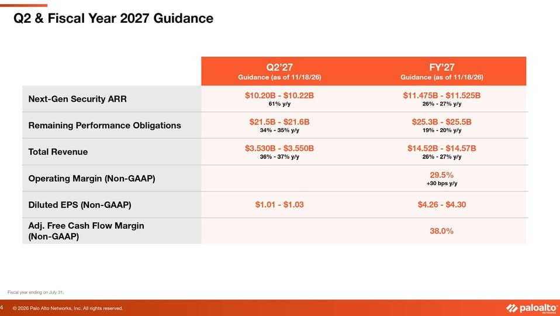

過去 26 小時共 4 則：兩則是 EP715 集數推播／Saily 業配，實質內容只有 Palo Alto Networks（PANW）FY27 第一季法說會筆記，加上一張財測投影片。重點是 AI 讓漏洞暴增、資安預算增加但供應商收斂，以及硬體零組件漲價壓毛利。
EP715 集數推播＋Saily eSIM 業配（85 折優惠碼），#6562 是同一分鐘的配圖。不講解。
PANW 27Q1
獨立的弱點測試與紅隊產品有約兩年的需求高峰，之後面臨被平台內建取代的壓力。硬體訂單含漲價預期的提前採購這要注意一下。
AI 抓漏速度超過企業修補速度，資安支出短期靠緊急預算、長期靠平台整合，計價從人頭走向流量與 token- 重大與嚴重等級漏洞的發現量是去年月均 7 倍，近期多起企業與政府當機，可歸因於修補和設定變更太趕
- 管理層六個月前預測攻擊型 AI 能力會在 3-6 個月內擴散到開源，現在已成真。Unit 42 揭露一小組駭客同時滲透 19 個組織
- 模型找漏洞的能力預期還要 6-9 個月才封頂，大量修補至少再 18 個月，持續性 frontier AI 測試需求看 12-18 個月。大概兩年後這類測試會被平台商吸收成內建的自我檢測與修復功能
- Frontier AI 防禦的錢來自緊急預算，管理層預期未來兩年資安預算上升，同時供應商數量收斂
- 平台化淨新增約 170 個，超過前兩年 Q1 合計。平台化客戶占 NGS ARR 2/3，淨留存率 120%
- 防火牆 TTM 訂單 +28%，硬體成長為歷來最高。來源為零組件漲價帶動提前採購、neocloud 建置、雙供應商收斂成單一供應商
- 企業 AI 仍在早期，只有 coding 普及，其他用例多在試點，卡在能否被保護與準確度
- SASE 上的 agent 流量年增約 9 倍，管理層預期 6–9 個月後開始按流量收費
- 開放權重模型占 token 流量由不到 5% 升到 60% 以上
- 硬體零組件成本偏高，毛利壓力影響全年，Q1 75.2%，年減 170 bp
- 資安商開始有算力資本支出，但初期用雲端與 neocloud 合約，不自建

#6564 是 PANW 的 Q2 與 FY27 財測投影片（11/18 公布）：Q2 營收 35.3–35.5 億美元（年增 36–37%）、NGS ARR 102.0–102.2 億（年增 61%）、RPO 215–216 億、Non-GAAP EPS 1.01–1.03；全年營收 145.2–145.7 億（年增 26–27%）、NGS ARR 114.75–115.25 億（年增 26–27%）、Non-GAAP 營業利益率 29.5%、調整後自由現金流率 38%、EPS 4.26–4.30。
講解
先看數字。官方新聞稿：截至 10/31 的這一季營收 34.45 億美元，年增 39%；NGS ARR（Next-Gen Security 年化經常性收入，指 SASE、Cortex、軟體防火牆等訂閱產品，是 PANW 最看重的成長指標）97.3 億，年增 66%；RPO（已簽約但尚未認列的收入）210 億，年增 35%；Non-GAAP EPS 1.05。這些成長率明顯含併購貢獻：新聞稿顯示無形資產攤銷從 3,900 萬跳到 2.82 億、出現 CyberArk 相關項目，但沒有拆出有機成長。財測也透露同一件事：Q2 的 ARR 年增 61%，全年卻只有 26–27%，落差大多應來自併購基期在下半年墊高（這是我的推論，公司沒有這樣拆解）。所以「66% 成長」不能直接當成有機動能看。
AI 讓漏洞「發現速度」超過「修補速度」。這是整則貼文的主軸，法說摘要也確認了：重大／嚴重漏洞發現量約為去年月均 7 倍，Unit 42（PANW 的威脅情報與事件應變團隊）看到一小組駭客用 agent 框架同時打進 19 個組織。邏輯是：大模型大幅降低找漏洞的成本，攻擊方與防守方都在用，但企業修補要測試、停機、走變更流程，跟不上，於是近期當機事件被歸因於「修太趕」。這帶來兩段式需求：短期是緊急預算買 frontier AI 紅隊與弱點測試；管理層自己也說這類測試需求只看 12–18 個月（Scotiabank 分析師就直接質疑其持續性），之後會被平台商做成內建的自我檢測。貼文開頭那句「獨立弱點測試／紅隊產品約兩年高峰、之後被平台取代」就是在講這點：對做單點工具的小廠是壞消息，對 PANW 這種平台商是好消息。
平台化與供應商收斂。「平台化」是 PANW 近兩年的策略：用免費期或折價換客戶把多家資安工具換成 PANW 全家桶。本季淨增約 170 個平台化客戶，這群客戶占 NGS ARR 三分之二，淨留存率超過 120%（老客戶一年後花的錢多兩成）。注意 120% 是平台化客戶的數字，不是全公司。
防火牆訂單 +28% 的品質要打折。貼文點出三個來源：零組件漲價前的提前採購、neocloud（CoreWeave 這類 AI 雲）建機房、雙供應商改單一供應商。其中提前採購是把未來需求拉到現在，之後可能有空窗；我查到的法說摘要沒有特別提到 pull-forward 這段，屬貼文自己的解讀或來自逐字稿細節，無法完全核實。同一件事的另一面是毛利：Non-GAAP 毛利率 75.2%、年減 170bp，原因是硬體零組件（約占營收一成）成本上升，加上毛利較低的 SaaS（尤其 Cortex）比重提高。另外 GAAP 毛利率依新聞稿換算約 68%，比 75.2% 低很多，差在併購攤銷與股票酬勞。
計價從「人頭」走向「流量與 token」。傳統資安按員工數或設備授權收費；但 AI agent 不是人，它們產生的 API 流量在 SASE（雲端安全存取服務）上年增約 9 倍，PANW 預期 6–9 個月後開始按流量計費。若成真，資安營收會跟 AI 使用量掛鉤，而不是跟企業人數掛鉤，是商業模式上很大的轉變。管理層說 Prisma AIRS（AI 安全產品）長期可能拿到 token 支出的 2–5%。開放權重模型占 token 流量從不到 5% 升到 60% 以上這點，我在可取得的摘要中找不到出處，請視為貼文轉述、待查證。
資安商開始有算力資本支出。同場宣布以約 45 億美元全股票收購 Applied Compute（幫企業後訓練開放權重模型，年化營收逾 1 億），預計 FY27 Q3 完成，會稀釋 FY27 營業利益率最多 100bp、FY28 最多 200bp。並計畫 3–5 年建置超過 100MW 推論算力，但走雲端與 neocloud 合約、不自建機房，到 FY2030 累計資本支出低於 30 億。貼文最後一條講的就是這個，只是沒提收購本身。分析師也問到資安公司做模型訓練的經驗與中立性問題。
小結：需求面（漏洞暴增、預算上升、平台化）很強，但要分開看「併購墊高的成長率」、「可能是提前採購的硬體訂單」和「只看 12–18 個月的緊急預算」，再加上毛利受零組件拖累與 Applied Compute 的利潤稀釋。